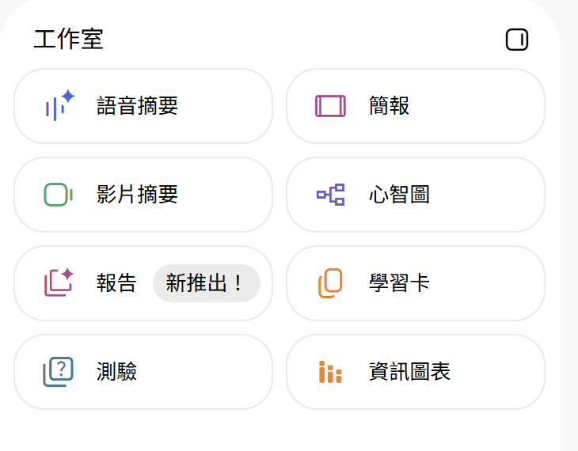

跨文本核心概念與迷思概念萃取
匯入多份不同版本的教材或補充文章時，快速抓出教學重點與學生盲點。
請完全根據我上傳的教材與補充資料，針對【單元名稱】進行教學分析： 1. 列出本單元的 3 到 5 個核心概念，並用一句話白話解釋。 2. 指出學生在學習這些概念時，最容易產生的「迷思概念」或「理解斷點」（請標註來源出處）。 3. 整理資料中出現的關鍵專有名詞，並附上適合【年級/學段，例如：國小高年級/國中】學生理解的定義。
從資訊轟炸到可執行流程，把 Gemini、NotebookLM 與 GEM 變成備課、教學、評量的省力夥伴。
這個網站保留原投影片脈絡，適合直播、研習或課後複習使用。每個分頁都是一段可直接講解的教學節點。
AI 工具更新很快，但老師真正需要的是一套能反覆使用、能貼近班級現場的流程。
把 AI 用在課前、課中、課後，才不會變成零散工具箱，而是能真正減省時間的教學支援系統。
Gemini 適合用來發想、轉換、整理初稿，也能與筆記本串聯，把過去對話變成後續備課素材。
NotebookLM 適合精準挖掘、統整來源、轉出學習單、簡報、測驗或報告，特別適合需要依據文本備課的語文教學。
建議資料來源 課本／文本 PDF、教冊、課綱、補充文章
匯入多份不同版本的教材或補充文章時，快速抓出教學重點與學生盲點。
請完全根據我上傳的教材與補充資料，針對【單元名稱】進行教學分析： 1. 列出本單元的 3 到 5 個核心概念，並用一句話白話解釋。 2. 指出學生在學習這些概念時，最容易產生的「迷思概念」或「理解斷點」（請標註來源出處）。 3. 整理資料中出現的關鍵專有名詞，並附上適合【年級/學段，例如：國小高年級/國中】學生理解的定義。
針對同一份文本，設計不同認知層次的課堂提問與活動。
請根據上傳的文本內容，為【年級/學段】學生設計一堂【節數，例如：2節課】的教學流程與提問鷹架： 1. 暖身導入（5分鐘）：設計一個貼近學生生活經驗的破冰問題或情境。 2. 層次化提問（ORID 或布魯姆分類）：從「事實提取（基礎）」、「推論分析（進階）」到「批判反思（高層次）」，各設計 2 個問題，並附上參考答案與文本依據。 3. 差異化任務：針對「學習進度較慢」與「具備延伸潛力」的學生，分別設計一個課堂小任務。
將單一學科內容轉化為生活情境或跨領域議題。
請分析上傳資料中的核心知識，幫我構思 3 個「真實生活情境」的教學切入點，並說明如何與【指定議題或科目，例如：資訊科技、環境教育、社會領域】進行跨領域連結。每個切入點請包含：情境描述、核心任務、以及預期培養的學生能力。
建議資料來源 課文、講義、學生課前預習單／提問紀錄
將學生的預習提問貼入筆記本，快速分類並準備講解策略。
我上傳了學生針對本單元的課前提問紀錄與課文資料。請幫我： 1. 將學生的問題歸納為 3 到 4 個主要類別，並統計各類別的關注度。 2. 找出「課本中有明確答案」與「需要老師額外補充引導」的問題。 3. 針對最難懂的那一類問題，提供一個具體的比喻或生活案例，讓我在課堂上能用 3 分鐘向學生解釋清楚。
快速產出可印製的課堂小組討論單。
請根據上傳的文本，設計一份「小組合作學習任務單」，預計讓學生討論 15 分鐘： 1. 設定一個明確的討論主題與任務目標。 2. 設計 3 個環環相扣的討論子題（需引用文本中的線索才能回答）。 3. 設計一個「小組共識產出格式」（例如：比較表格、心智圖架構或立場聲明），方便各組上台發表。 4. 附上給組長的「討論引導小提示」。
點擊 NotebookLM 右側「語音摘要」旁的「自訂（Customize）」按鈕，貼入以下指令。
請用輕鬆、像兩位老師在聊天的口吻，針對【單元名稱】製作一段約 5 分鐘的導讀。對象是【年級/學段】的學生。請聚焦在：這個單元為什麼跟他們的生活有關、閱讀時要特別注意哪兩個線索，並在最後留下一個開放性問題讓他們帶到課堂上討論。請避免艱澀的學術術語。
建議資料來源 課本、講義、段考範圍資料、素養題範例
依據指定文本出題，確保題目不超綱且具鑑別度。
請嚴格依據我上傳的文本內容，設計一組包含「情境題幹」與「3 題單選題、1 題簡答題」的素養導向評量題組： 1. 題目需涵蓋不同層次：第 1 題測驗「訊息檢索」、第 2 題測驗「統整解釋」、第 3 題測驗「省思評鑑」。 2. 每個選擇題的誘答選項（錯誤選項）必須具備合理性（例如學生常見的誤讀），不可出現明顯荒謬的選項。 3. 請在最後附上「標準答案」、「詳解（需標明文本段落依據）」以及簡答題的「評分規準（Rubric）」。
為學生的專題報告、作文或實作任務建立客觀的評分表。
請根據我上傳的【作業說明/學習單目標】，設計一份給學生看的「表現任務評分規準（Rubric）」表格： 1. 列出 4 個核心評分向度（例如：內容深度、結構邏輯、創意表達、資料運用）。 2. 將表現分為四個等級：「優秀（4分）」、「良好（3分）」、「基礎（2分）」、「待加強（1分）」。 3. 每個格子內的描述必須是「具體可觀察的行為指標」，避免使用「很好、尚可、不夠好」等模糊字眼，讓學生能照著自我檢核。
上傳學生的作答樣本或錯題統計，找出教學盲點。
我上傳了本次測驗的題目與學生的常見錯誤作答紀錄。請幫我分析： 1. 學生在哪些題目上失分最嚴重？這些題目對應到教材中的哪個概念？ 2. 推測學生寫出這些錯誤答案背後的「思考路徑」是什麼？ 3. 針對這些盲點，提供 2 個可以在下一堂課進行的「補救教學微活動（10分鐘內）」。
建議資料來源 班規、學校行事曆、輔導紀錄、親師溝通草稿
匯入事件經過與班規，將情緒性或零碎的紀錄轉化為專業、溫暖的親師溝通文字。
請根據我上傳的【事件紀錄/班級規定】，幫我撰寫一則傳給家長的 LINE 溝通訊息（或聯絡簿文字）。 語氣要求：客觀、溫和、展現專業與同理心，避免指責家長或學生。 結構請包含： 1. 肯定與鋪陳：先肯定孩子近期的正向表現或說明老師的關心。 2. 客觀陳述事實：清楚說明發生的狀況（對事不對人）。 3. 處理方式與後續策略：說明學校端已採取的引導措施。 4. 親師合作邀請：提出 1 到 2 個具體且容易執行的建議，邀請家長在家協助配合。
針對班上近期出現的常規問題（如：秩序、同儕衝突、作業遲交），設計班會引導流程。
最近班上出現了【描述問題，例如：下課打鬧過頭導致受傷/小組分工不均】的狀況，我已上傳了我們的班級公約。請幫我設計一個 20 分鐘的「班會討論引導腳本」： 1. 設計一個不點名批判、能引發全班共鳴的開場提問。 2. 帶領學生回顧班級公約中的相關精神，並引導他們思考該行為對「自己」與「他人」的影響。 3. 列出 3 個引導問題，讓學生自己討論出具體的改善方案與約定。
匯入平時觀察紀錄表（可用 Excel 轉 PDF 或直接貼入文字筆記），批次產出個人化評語。
請根據我上傳的《學生平時表現觀察紀錄》，為名單中的每位學生撰寫一段約 60～80 字的期末成績單評語。 撰寫原則： 1. 採用「三明治法」：先具體點出該生的亮點或性格優勢（需符合紀錄事實） → 接著用正向鼓勵的語氣提出一個可持續精進的方向 → 最後給予溫暖的期許。 2. 避免千篇一律的套話（如：品學兼優、活潑可愛），請將紀錄中的具體事件轉化為生動的形容。 3. 請以表格呈現，欄位包含：座號/姓名、評語內容、字數統計。

選好課文來源後，可以在工作室選擇以下八項功能。以「人物描寫」這一課為例：
重複性的備課、出題、改寫與摘要任務，可以透過 GEM 標準化，讓老師少重複輸入，多保留時間做判斷。
以附檔的範圍出成一張國小三年級定期評量卷，參考考試重點檔案，要有第一大題國字注音，共二十格20分，第二大意選擇，包含字形、字音、文意、修辭共二十題，共40分，文意測驗避免考記憶類型，以理解推論為主，第三大題造句三題，照樣造句二題，一題四分，共20分，第四大題標點符號5分，再一篇台灣黑熊的說明文閱讀測驗500字，仿照台灣的山椒魚這一課考出標題和說明文特點，五題閱讀測驗，加1題寫作任務，共15分。每課平均配分，題目的出題原則和長度請參考機器人裡的資料，選擇題的選項要用1.2.3.4。
AI 最適合處理重複性、生成多版本、整理資料；但高價值互動、情感支持與教學決策，仍需要老師親自掌握。
AI 能在幾秒內提供一百種解法，但它無法取代教師理解學生、設計互動、親手解決問題後的成就感。